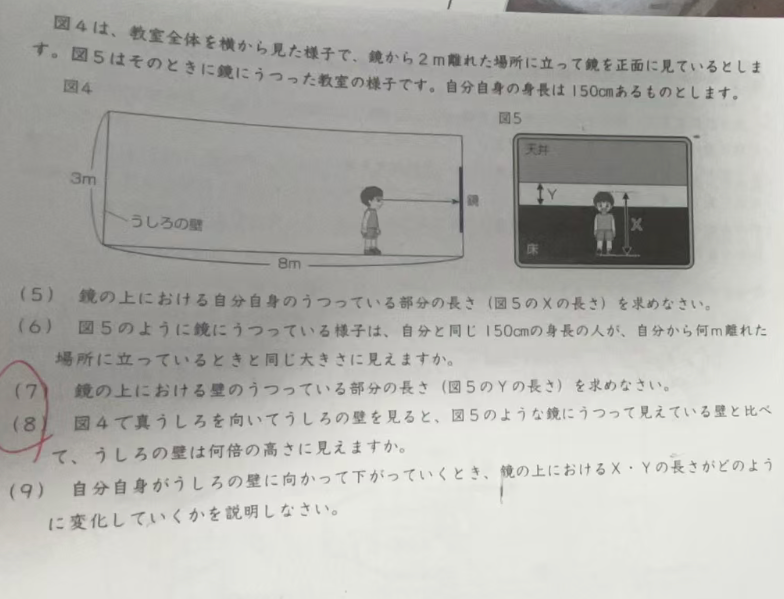

Step 0/5
(5) X の長さ / Length of X
\(X=\frac{150}{2}=75\mathrm{cm}\)
Answer (5): \(X=75\mathrm{cm}\)
(6) 見かけサイズに対応する距離 / Equivalent distance
\(d_{\text{eq}}=2d=2\times2=4\mathrm{m}\)
Answer (6): \(4\mathrm{m}\)
(7) Y の長さ / Length of Y
\(Y=\frac{d}{d+8}\times3\mathrm{m}\)
\(d=2\Rightarrow Y=\frac{2}{10}\times3=0.6\mathrm{m}=60\mathrm{cm}\)
Answer (7): \(Y=60\mathrm{cm}\)
(8) 直接見る壁 vs 鏡越しの壁 / Direct vs mirror wall
見かけ高さ \(\propto \frac{\text{実高さ}}{\text{距離}}\Rightarrow\frac{\text{direct}}{\text{mirror}}=\frac{10}{6}=\frac{5}{3}\)
Answer (8): \( \frac{5}{3}\) 倍（約1.67倍）
(9) 後ろへ下がるときの変化 / Change while moving backward
\(X(d)=\frac{150}{2}=75\mathrm{cm}\)（一定）
\(Y(d)=\frac{3d}{d+8}\mathrm{m}\)（\(d\) とともに単調増加）
Answer (9): X は不変、Y は増加
| Source | Key idea | Used for | Consistency |
|---|---|---|---|
| Method A (mirror midpoint) | full-body mirror length = half height | (5), (9) for X | PASS |
| Method B (similar triangles) | \(Y=\frac{d}{d+8}\times3\) | (7), (9) for Y | PASS |
| Method C (apparent-size ratio) | apparent height \(\propto1/\text{distance}\) | (6), (8) | PASS |
d = 2.0 m